参加2018年四季度居民消费价格预期调查的专家及相关专业人士362人，收回有效问卷362份。与上期稳中缓涨预期相比，四季度居民消费价格总水平和主副食品价格上涨预期大幅上升，以缓涨预期为主，与去年同期预期一致，但其中看涨预期上升。与上期缓涨预期相比，四季度商品房价格看涨预期迅速下降，看平预期大幅上升，且高于看涨预期，绝大部分人预计商品房价格缓涨趋稳。
一、居民消费价格总水平缓涨预期增强
与三季度相比，预计2018年四季度居民消费价格总水平上涨294人，占比81.21%，其中预计缓和上涨245人、明显上涨49人，分别占83.33%、16.67%；预计基本持平64人，占比17.68%；预计有所下降3人，占比0.83%；不能确定1人，占比0.28%；无人预计明显下降。
调查结果显示，约八成的人预计四季度居民消费价格总水平上涨，其中预计缓和上涨的人数占比超过八成；不到二成的人预计居民消费价格总水平基本持平。绝大部分人预计四季度居民消费价格总水平上涨，并以缓涨为主。

从居民消费价格总水平预期走势看，与上期相比，四季度（本期）居民消费价格总水平上涨预期大幅上升，较上期的48.27%，增加了32.94个百分点；与去年同期的64.84%相比，本期增加16.37个百分点。
与上期48.53%的人预计居民消费价格总水平基本持平相比，本期看平预期迅速下降，减少了30.85个百分点；与去年同期的33.94%相比，本期看平预期减少16.26个百分点。
本期居民消费价格总水平下降预期继续下滑，处于极低位占比，和去年同期占比基本一致，与上期的3.2%相比，减少2.37个百分点。
调查表明，与上期相比，本期居民消费价格总水平上涨预期大幅上升，绝大部分人预计居民消费价格总水平上涨，并以缓涨为主，与往年同期（调查期间）预期一致，且上涨预期占比达历史最高。
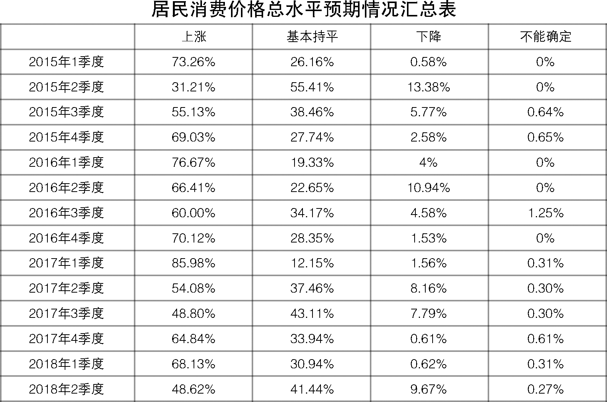
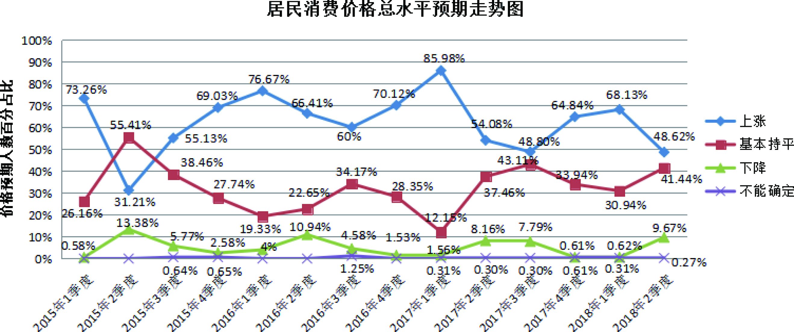
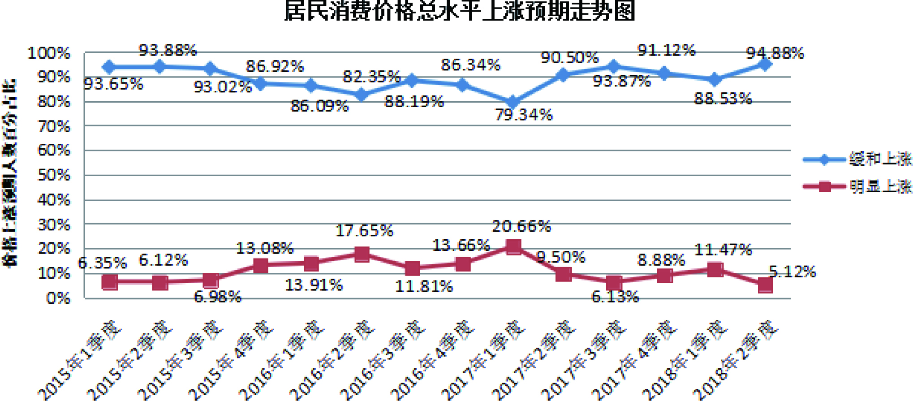
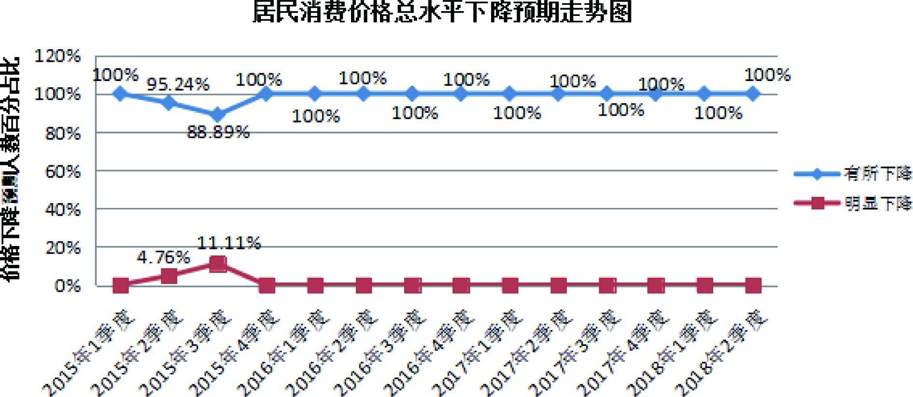
二、主副食品价格预期缓涨
与三季度相比，预计2018年四季度主副食品价格上涨286人，占比79.01%，其中预计缓和上涨223人、明显上涨63人，分别占77.97%、22.03%；预计基本持平69人，占比19.06%；预计有所下降5人，占比1.38%；不能确定2人，占比0.55%；无人预计明显下降。
调查结果显示，约八成的人预计四季度主副食品价格上涨，其中预计缓和上涨人数接近八成；约二成的人预计主副食品价格基本持平。绝大部分人预计四季度主副食品价格上涨，并以缓涨为主。
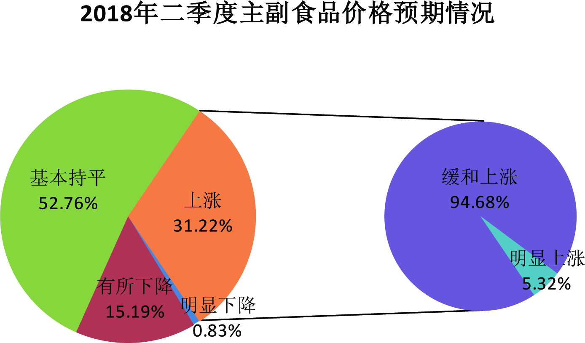
从主副食品价格预期走势看，与历史同期相比，本期主副食品价格上涨预期占比达历史最高。与上期42.13%的人预计主副食品价格上涨相比，本期上涨预期大幅上升，增加了36.88个百分点，其中缓涨预期仍占主导；与去年同期的66.06%相比，本期主副食品价格上涨预期增加12.95个百分点。
与上期49.87%的人预计主副食品价格基本持平相比，本期看平预期大幅下降，减少了30.81个百分点；与去年同期的31.82%相比，本期看平预期减少12.76个百分点。
本期主副食品价格下降预期继续下滑至极低占比，较上期的7.73%，减少了6.35个百分点；与去年同期的1.82%相比，本期下降预期没有变化。
调查表明，与上期绝大部分人预计主副食品价格稳中缓涨相比，本期上涨预期大幅上升，绝大部分人预计主副食品价格上涨，且以缓涨为主，与去年同期预期保持一致，但其中看涨预期上升，看平预期下降。
关于大米、食用油和猪肉价格预期情况。本期预计大米价格上涨103人，占比28.45%，其中缓和上涨88人，明显上涨15人，分别占85.45%、14.55%；基本持平245人，占比67.68%；有所下降11人，占比3.04%；不能确定3人，占比0.83%；无人预计明显下降。预计食用油价格上涨159人，占比43.93%，其中缓和上涨126人，明显上涨33人，分别占79.24%、20.76%；基本持平197人，占比54.42%；有所下降4人，占比1.1%；不能确定2人，占比0.55%；无人预计明显下降。预计猪肉价格上涨248人，占比68.51%，其中缓和上涨169人，明显上涨79人，分别占68.15%、31.85%；基本持平83人，占比22.93%；有所下降27人，占比7.46%；明显下降1人，占比0.27%；不能确定3人，占比0.83%。
调查结果显示：与上期相比，本期大米价格预期继续以平稳为主，但较上期上涨预期上升，平稳预期下降；与去年同期相比，本期大米价格预期变化不大。与上期和去年同期大部分人预计食用油价格平稳相比，本期食用油价格上涨预期上升，绝大部分人预计食用油价格稳中缓涨。与上期大部分人预计猪肉价格稳中缓涨相比，本期上涨预期大幅上升，大部分人预计猪肉价格上涨，并以缓涨为主。与去年同期相比，本期猪肉价格预期变化不大。
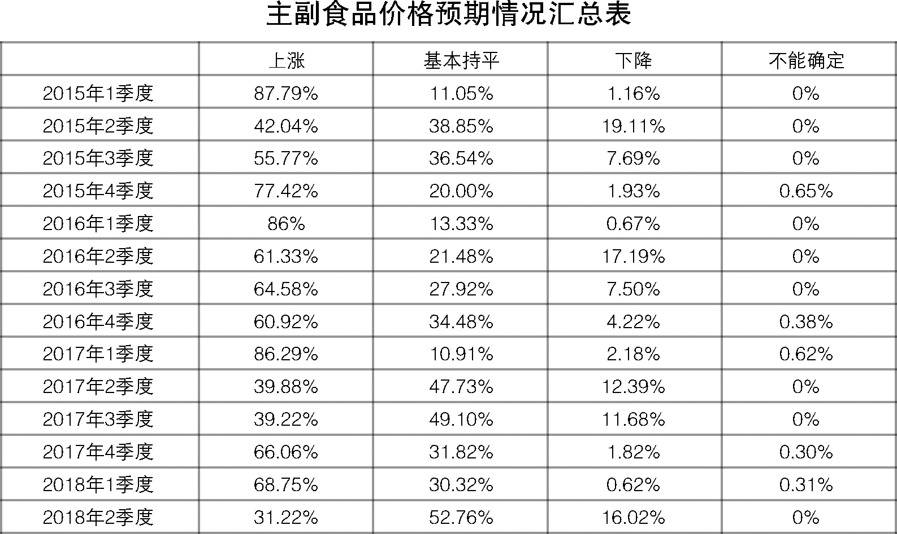
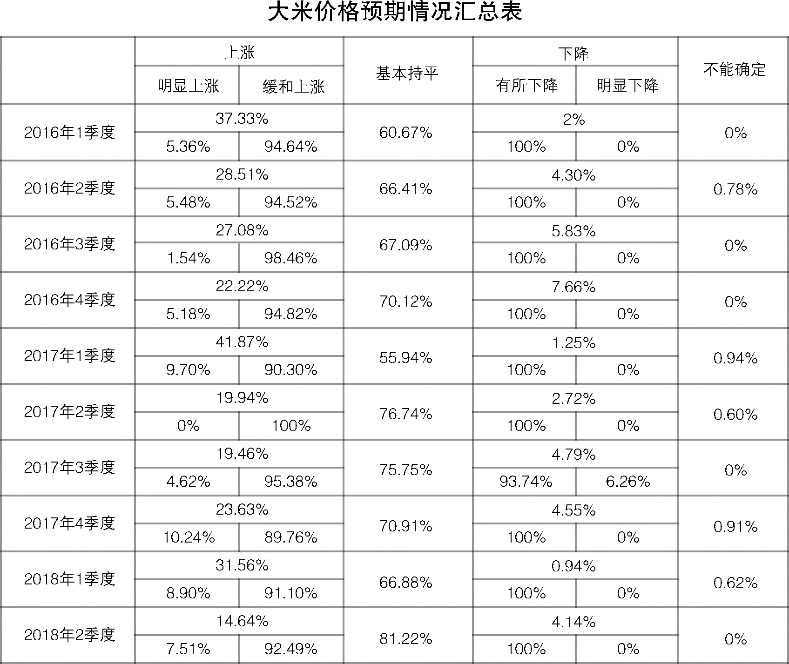

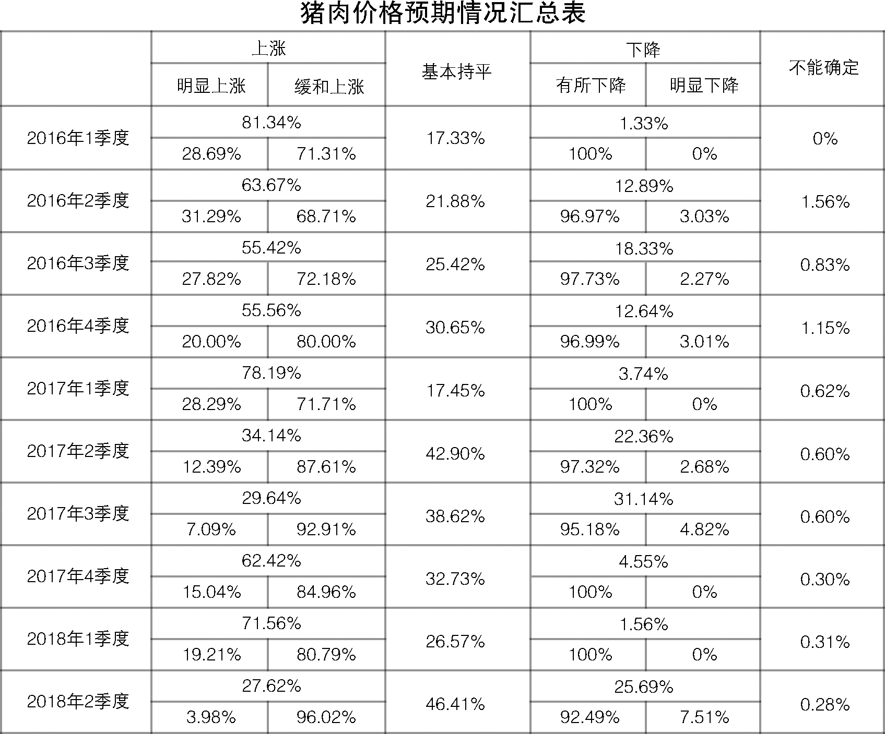
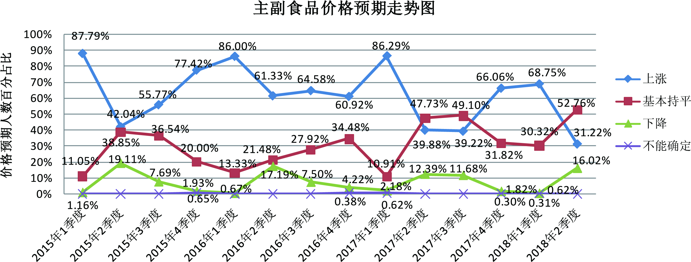
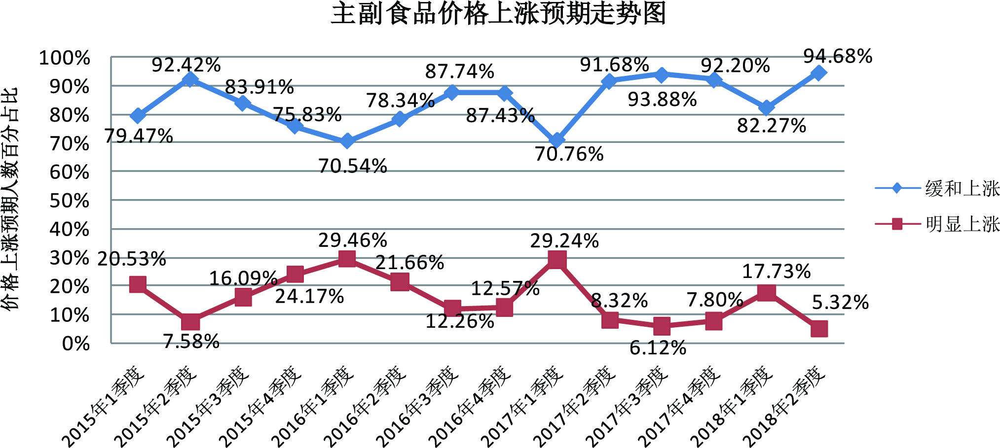

三、商品房总体价格预期缓涨趋稳
与三季度相比，预计2018年四季度商品房总体价格上涨160人，占比44.2%，其中预计缓和上涨144人，明显上涨16人，分别占90%、10%；预计总体价格基本持平174人，占比48.07%；预计总体价格有所下降23人，占比6.35%；预计总体价格明显下降3人，占比0.83%；不能确定2人，占比0.55%。
调查显示，超过四成的人预计四季度商品房总体价格上涨，其中预计缓和上涨人数为九成；近半数的人预计商品房总体价格基本持平。绝大部分人预计商品房总体价格缓涨趋稳。

从商品房价格预期走势看，与上期大部分人预计商品房价格上涨相比，本期上涨预期明显回落，较上期的70.4%，下降了26.2个百分点；与去年同期的56.36%相比，本期商品房价格上涨预期减少12.16个百分点。
与上期25.6%的人预计商品房价格基本持平相比，本期看平预期增加22.47个百分点；与去年同期的35.76%相比，本期看平预期增加12.31个百分点。
本期商品房价格下降预期继续保持低位占比，与上期的2.93%相比，本期增加4.25个百分点；与去年同期的6.97%相比，本期下降预期略增0.21个百分点。
调查表明，与上期大部分人预计商品房价格缓涨相比，本期商品房价格上涨预期迅速下降，看平预期大幅上升，绝大部分人预计商品房价格稳中缓涨；本期商品房价格预期与去年同期基本一致，但上涨预期下降，看平预期上升。
在国家和省持续、稳定的房地产调控政策及“房子是用来住的，不是用来炒的”的定位下，除今年三季度商品房价格上涨预期出现短暂回温反弹外，商品房总体价格上涨预期减弱，调控政策效果显现，但仍需坚持绝不松懈。
从全省各地商品房价格预期情况看，与上期大部分城市缓涨预期为主相比，本期我省商品房价格预期总体缓涨趋稳，其中，南京、苏州二市商品房价格以看平预期为主；无锡、南通、连云港、淮安、盐城、镇江六市商品房价格以稳中缓涨预期为主；徐州、常州、扬州、泰州、宿迁五市商品房价格以缓涨预期为主，且较上期均有所下降。
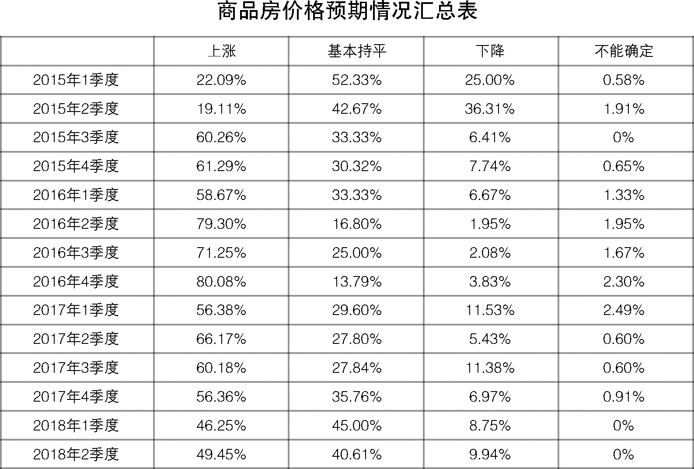
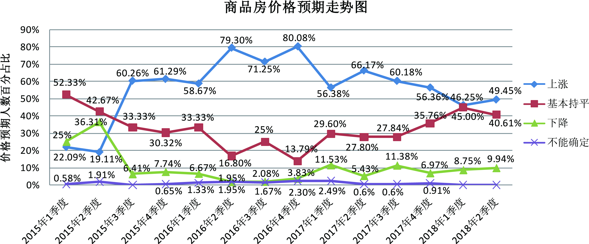
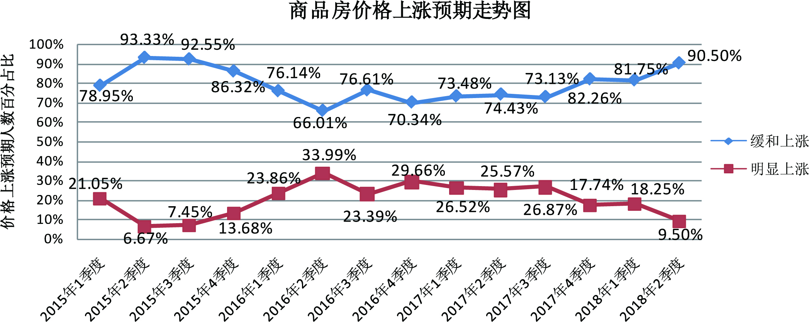
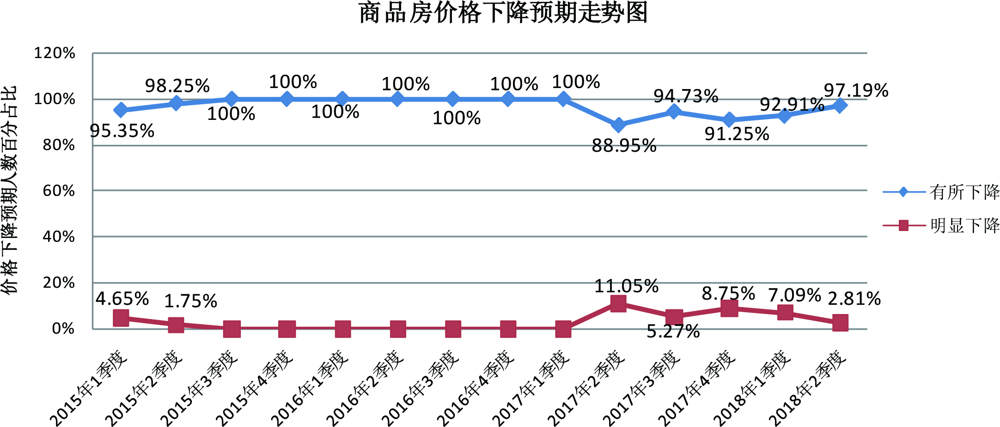
江苏省物价局-江苏省物价局网站
二○一八年十月